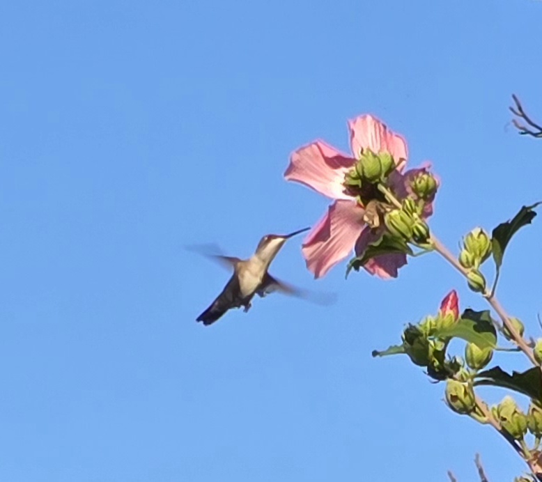

MSIS and AI in Business Certificate Programs
I started the MSIS program in 2024 with the goal of increasing my programmatic knowlege of managing enterprise wide applications. I completed my MSIT degree Spring 2024 which gave me new technical insight into leading advanced enterprise level projects. My MSIT capstone project was about decreasing the Digital Divide among senior citizens over the age of 65 through teaching them how to use AI tools. I enrolled in the AI for Business Certificate program because it will give depth to my AI skills and knowledge.
| Session | Course Name |
|---|---|
| 1st Session Fall | Web Development |
| 2nd Session Fall | AI Business SCM |
| 2nd Session Fall | IT Management |
My career objectives include transitioning from a project management role into AI-centric programmatic lead roles. My career options list:
Key Personal Strengths defined by Gallup Assessment: Deliberative, Relator, Strategic, Analytical
| Hobby Name | Website | Images |
|---|---|---|
| Hummingbird watching | r/hummingbirds |  |
| Star Trek | startrek.com |